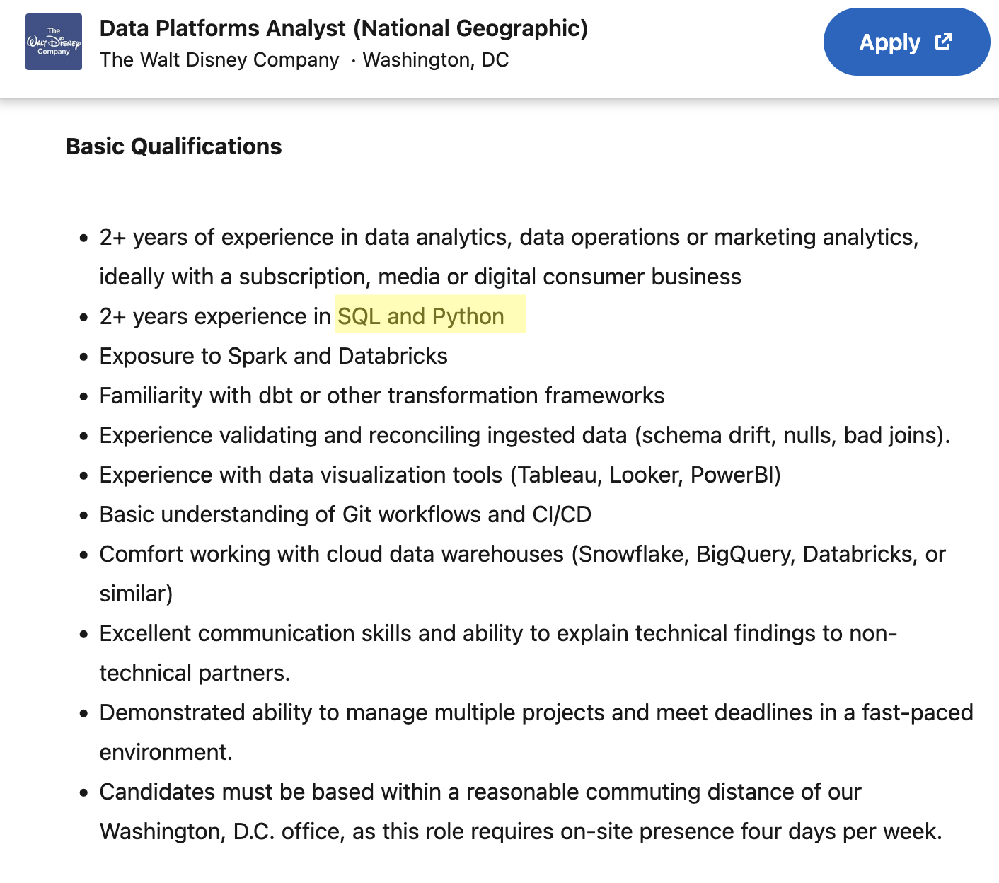
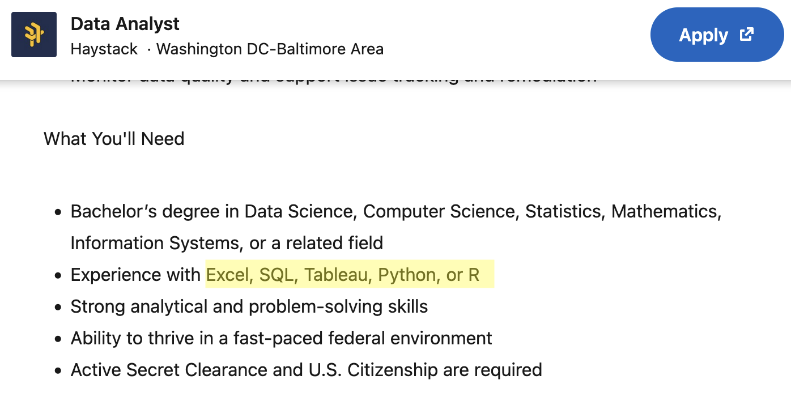
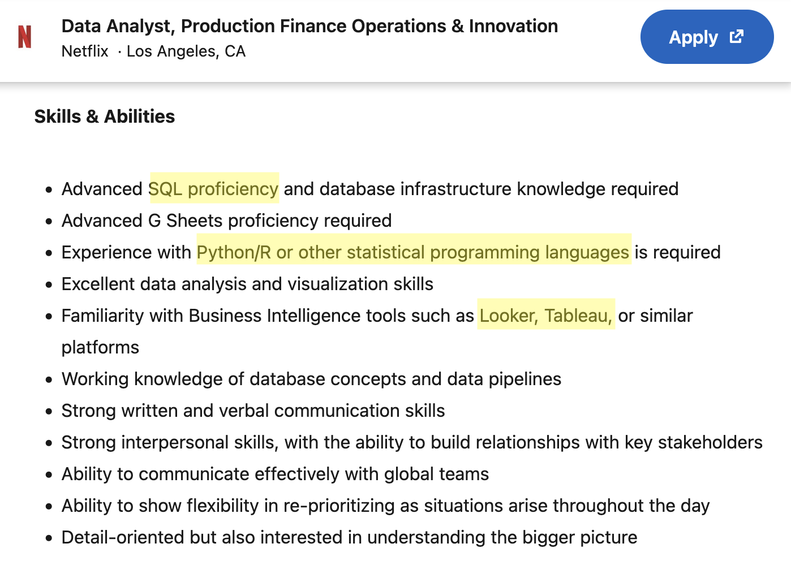

What language do you (or your students) primarily use in class?
R
Python
SQL
A mix, depending on the course
Personal Experience
I learned statistics in R.
Then a required CS course, “Intro to AI”, expected every assignment in Python. I’d never written a line of it.
It was intimidating.
But once I got past the unfamiliar syntax, most of what I needed, like data frames, indexing, fitting a model, and reading output, wasn’t that different.
The big questionSo why don’t we let students dip their toes in earlier?
More than “the next class”
Making the next course less scary is reason enough. But there’s more:
Reason 1 · Easier to learn nowIt’s easier to learn now than later: early exposure builds familiarity, and familiarity makes the next language easier.
Reason 2 · Industry expects itReal jobs mix languages: and teams collaborate across them every day.
Reason 3 · Languages come and goMATLAB used to dominate engineering curricula; far less so now. Comfort moving between languages outlasts any single one of them.
Like a multilingual childhood
Kids raised hearing two languages rarely speak both perfectly, but a third, related language later comes much easier.
Key ideaEarly exposure doesn’t need to produce fluency. It needs to produce familiarity so the next language doesn’t look foreign.
Same job. Different syntax.
Three real entry-level Data Analyst postings.

Disney — SQL & Python

Haystack —SQL, Python, or R

Netflix — Python/R + SQL
TakeawaySame role. Same skills. Different syntax listed as a “requirement.”
What’s coming
For the rest of our time together:
A demo: a way (not the way) to bring another language into your course without installing a second IDE
Prompt-building: how to ask AI for a translation that teaches, not just one that works
Guardrails: a few ways to keep students from just copy-pasting
Parallels: the same idea, side by side, in different languages
Us, too: how we use AI to build and maintain bilingual materials
Then it’s your turn: an activity, and a chance to share your thoughts
Meet Quarto
Quarto is a free, open authoring tool for writing and running code.
Students can write R and Python (and some other languages!) in the same document.
The pointOne environment, both languages. Students see R and Python side by side, instead of treating them as separate worlds.
Demo: R → Python with AI
A student has a regression working in R:
model <-lm(score ~ hours, data = study_data)summary(model)
They need it in Python. The obvious move is to ask an AI to translate.
The real questionNot can it translate, but what the student learns when it does.
The lazy prompt
Prompt
“Translate this R code to Python.”
What comes back
from sklearn.linear_model import LinearRegressionX = study_data[["hours"]]y = study_data["score"]LinearRegression().fit(X, y)
Correct slope, correct intercept. runs first try.
The catchIt works, but what does it teach? A correct answer feels like a finished lesson. The student copies it, it runs, and they never understand the exact syntactic differences.
A prompt that teaches
Same task, but ask for the reasoning, not just the code:
I know R. Translate this to Python with sklearn, and:
name the packages I need to import
map each R line to its Python equivalent
flag the idiom differences
end with one concept-check question
Reusable shapegoal · mapping · idiom · check. The same moves work for any language pair you teach.
What the prompt surfaced
It returned working Python and flagged what a simpler prompt would have hidden from the student:
A hidden idiom That R’s score ~ hours builds the design matrix on its own, while sklearn has you hand it X and y.
A statistics gap That LinearRegression gives no SEs, t-stats, or p-values and pointed to statsmodels’ ols() for an R-style summary().
Activities to try in class
Matching Show an R snippet, pick the Python equivalent. A quick warm-up or exit ticket.
Fill-in-the-blank Give the working code in one language; blank key differences in the other.
Open Ended Explain the differences between two pieces of code they can see.
Quick recap
Quarto as a way to run languages side by side
A prompt template that teaches, not just translates
A couple of checks so AI stays a bridge, not a crutch
Up nextNow it’s your turn.
🎯 Your turn
Where could this live in your courses?
In your groups
Take one course you actually teach:
1 · Where it fits and where it would backfire Think about places a second language could appear succesfully and places it might break.
2 · Make it concrete Talk through how you might keep students using AI for translating-to-understand, rather than blind copy and pasting.
Share back We’ll discuss and share back as a group!
Who benefits most?
Students moving between courses that use different languages: the everyday case
Students switching ecosystems mid-program (capstone, research lab)
Students interviewing for internships and jobs
Watch outAt risk of over-reliance:
Students who haven’t built the underlying concept yet